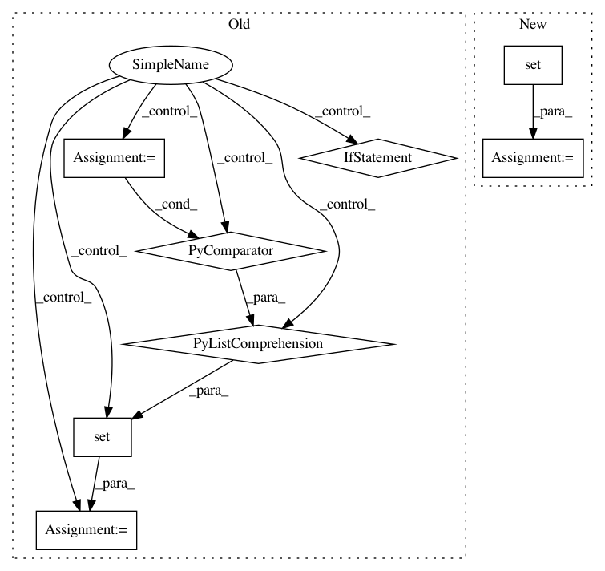

6327d66fc29e242a8a47018d333c12b4b4bcfaf9,newspaper/nlp.py,,,#,5
Before Change
from . import settings
with open(settings.NLP_STOPWORDS_EN, "r") as f:
stopwords = set([w.strip() for w in f.readlines()])
ideal = 20.0
After Change
ideal = 20.0
stopwords = set()
def load_stopwords(language):
Loads language-specific stopwords for keyword selection
In pattern: SUPERPATTERN
Frequency: 3
Non-data size: 8
Instances
Project Name: codelucas/newspaper
Commit Name: 6327d66fc29e242a8a47018d333c12b4b4bcfaf9
Time: 2017-10-21
Author: obulat@gmail.com
File Name: newspaper/nlp.py
Class Name:
Method Name:
Project Name: uber/petastorm
Commit Name: f57c6162ea1dd0d9958d647a67e717f1de9caace
Time: 2018-12-09
Author: yevgeni@uber.com
File Name: petastorm/tests/test_end_to_end.py
Class Name:
Method Name: test_partition_multi_node
Project Name: snipsco/snips-nlu
Commit Name: 24ea2b5f7bfe4558663614c5bdce3d1f4ebd9567
Time: 2017-09-20
Author: adrien.ball@snips.net
File Name: snips_nlu/slot_filler/feature_functions.py
Class Name:
Method Name: get_token_is_in_fn